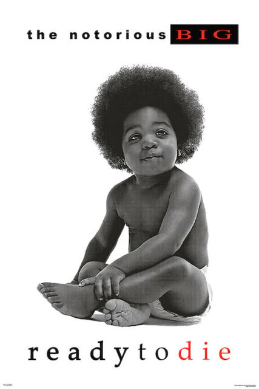
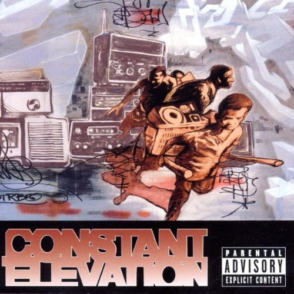
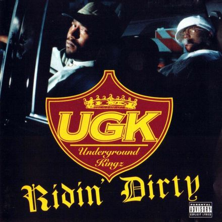
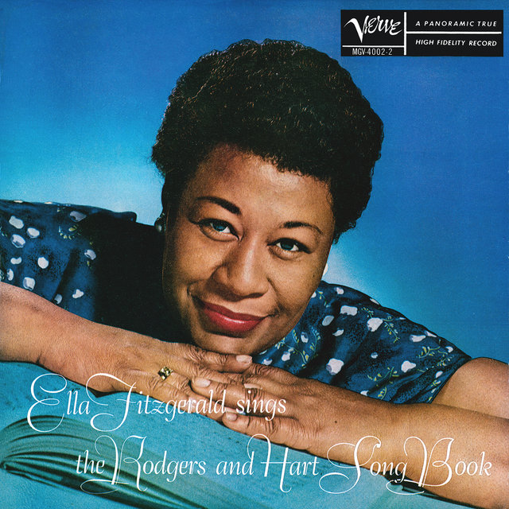
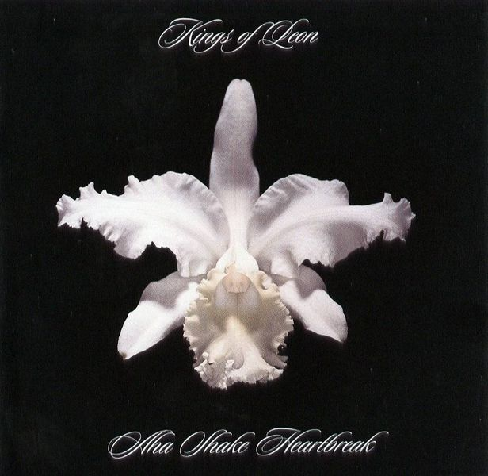
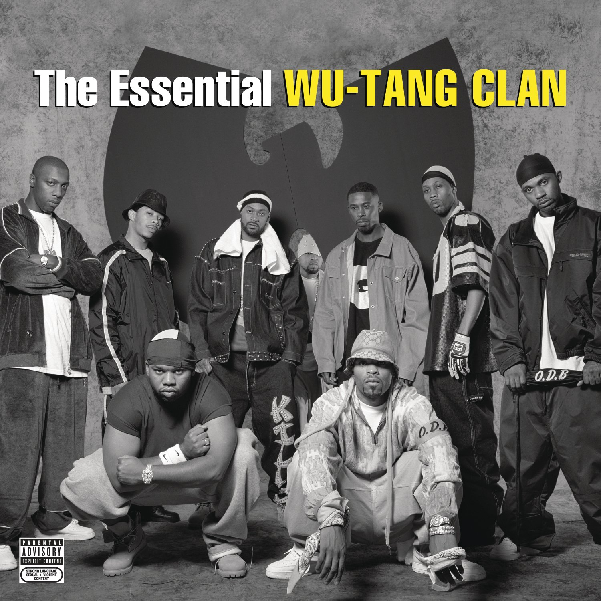
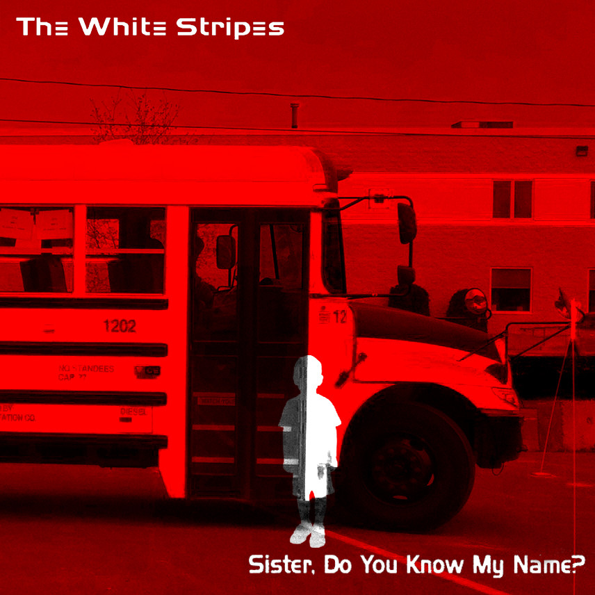
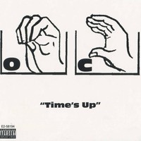
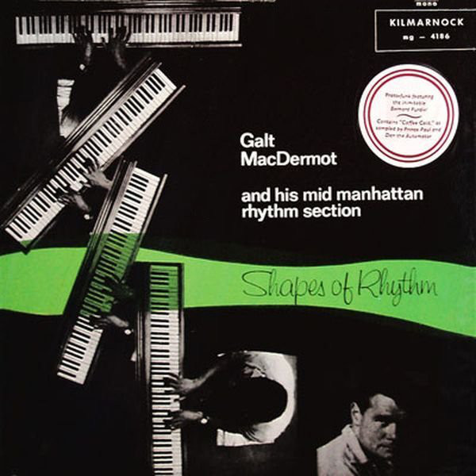

Lyrics
Ready To Die
Yeah, yeah, you ready motherfucker?
We gonna kill your ass
(I'm ready)
As I grab the Glock, put it to your headpiece
One in the chamber, the safety is off release
Straight at your dome, homes, I wanna see cabbage
Biggie Smalls the savage, doing your brain cells much damage
Teflon is the material for the imperial
Mic ripper, girl stripper, the Henny sipper
I drop lyrics off and on like a lightswitch
Quick to grab the right bitch and make her drive the Q
45, Glocks and TEC are expected when I wreck shit
Respect is collected, so check it
I got techniques dripping out my buttcheeks
Sleep on my stomach so I don't fuck up my sheets, huh
My shit is deep, deeper than my grave, G
I'm ready to die and nobody can save me
Fuck the world, fuck my moms and my girl
My life is played out like a Jheri curl, I'm ready to die!
As I sit back and look when I used to be a crook
Doing whatever it took from snatching chains to pocketbooks
A big bad motherfucker on the wrong road
I got some drugs, tried to get the avenue sewed
I want it all from the Rolex's to the Lexus
Getting paid is all I expected
My mother didn't give me what I want, what the fuck?
Now I've got a Glock making motherfuckers duck
Shit is real and hungry's how I feel
I rob and steal because that money got that whip appeal
Kicking niggas down the steps just for rep
Any repercussion lead to niggas getting wet
The infrared's at your head real steady
You better grab your guns 'cause I'm ready
I'm ready to die
(Yes, I'm ready)
Nah we ain't gonna kill your ass yet, we gonna make you suffer
(So die motherfuckers, die motherfuckers, die)
In a sec, I throw the TEC to your fucking neck
Everybody hit the deck, Biggie 'bout to get some rec'
Quick to leave you in a coffin for slick talking
You better act like CeCe and keep on walking
When I hit ya, I split ya to the white meat
You swung a left, you swung a right, you fell to the concrete
Your face, my feet, they meet with stompin'
I'm rippin' MCs from Tallahassee to Compton
Biggie Smalls on a higher plane
Niggas say I'm strange, deranged because I put the 12 gauge to your brain
Make your shit splatter
Mix the blood like batter then my pocket gets fatter
After the hit, leave you on the street with your neck slit
Down your backbone to where your motherfucking shit drip
The shit I kick, ripping through the vest
Biggie Smalls passing any test, I'm ready to die!
I'm ready
(Yes, I'm ready)
Is This It?

Can't you see I'm trying?
I don't even like it
I just lied to
Get to your apartment
Now I'm staying
There just for a while
I can't think 'cause
I'm just way too tired
Is this it?
Is this it?
Is this it?
Said they'd give you anything you ever wanted
When they lied, I knew it was just stable children
Trying hard not to realize
I was sitting right behind them
Oh dear, can't you see? It's them it's not me
We're not enemies
We just disagree
If I was like him, all pissed in this bar
He changes his mind, says I went too far
We all disagree
I think we should disagree, yeah
Is this it?
Is this it?
Is this it?
Can't you see I'm trying?
I don't even like it
I just lied to
Get to your apartment
Now I'm staying
There just for a while
I can't think 'cause
I'm just way too tired
Constant Elevation
Beeeware! Four figures appear through the fog
Yeah! Gravediggaz cut like swords... rrRRRAAA!!
Fear makes ya brain go numb
You ain't, got a clue, where the Gods, come from
I told myself to exist and then I flittle
With millions of sperm cells and I found the eggggg
Know I got my chance
I came to enhance represent and get open as a bank
Psychopathic, a deep theourassic
Gravediggaz are massive, puttin niggaz in caskets
Blowin like the wind, when I'm in my spin
ya got fucked cross the path of the twister
You face the storm and bring it onnnnn
and get chopped in the blocks from Hitchcock
The birds, my mental ward is my brainstorm
Somehow I flipped and came equipped with a chainsaw
Diggin graves see, pays my rent for the day
Some hate the image that I must portray
Critics, say "Go to hell" I say "Yeah,
stupid motherfucker I'm already there!"
Fru-strated, mentally aggravated
to be the rebel that society created
I'm good most times but when I'm foul then I'm flagrant
Livin in the shadows like a government agent
Ummm, one side of the story
Shit cooked up from Gravediggaz laboratory
Transformin brains with remains of a slug
With the Undertaker makin beats that's buuuuuugged
Path we creatin
Splittin G's, choppin necks with the fat guillotines
I'm your nightmare, fright with verse, one verse
Will put your ass in my black hearse
Ryza-rector, ha ha ha ha, ha ha ha ha
Hooah, hooah, hooah, hoo!
Danger, enter the graveyard, chamber
It's like, diggin, in yer EAR, with a hanger
I inject my poison stinger, into your finger
Of all your life forces, I'll take ya
I'm blood, thirsty, thirsty for sure
About to bloodsuck the same ones, who bloodsuck the poor
You're, not safe, anymore
To all the holy spooks, I declare war
I'll, gravedig them up from hell, ryzarect them
From the poisonous bones of swine, I disinfect them
Positive Energy Activates, Constant Elevation
Positive Energy Activates, Constant Elevation
Out of the darkness
Out of the deep of the darkness
Lies the Gravediggaz
from the parts unknown
The world that's unknown
People fear what they don't understand
So, this is why we're here
To explain that there's nothin to be afraid of
Have no fear, Gravediggaz are here
Diamonds and Wood
I flips down the Ave
Know I'm looking good
I'm banging "Screw", nigga
Diamonds up against that wood
I flip down the Ave., you know I'm looking tight
These jealous niggas looking at me and my car so shife
Wanna take my life, and wanna jack, but I see all through that
Never let these bitch niggas take what's mine, nigga never do that
Who say he going through a thang, when y'all ain't never lied
I gotta baby, but his mama act like he ain't mine
Wicked women, using children to live on
Wanna hurt and try to hate, 'cause she know the thrill is gone
Say man, I stopped smoking wit' haters back in ninety-four
But niggas thinking that a Sweet gong get him through my door
But niggas talk alotta shit, in a safe place
I know 'cause he can't look me eye-to-eye when he in my face
Now nigga listen to my beats, and see just what I mean
Nigga I ride dirty everyday, but still I shine so clean
Glitter and gleam, ain't all what it look like
So I keep swanging, out here clanging tryna live my life
I flips down the Ave
Know I'm looking good
I'm banging "Screw", nigga
Diamonds up against that wood
I see these niggas and days, go and come
And for me, just to wake, I know I'm blessed
I grab my 'ses and split my Swisher wit' my thumb
Some of my Sweets be tight, now some of my Sweets be fucked up
But all of my Sweets gon' blow, so killa' smoke get sucked up
I lucked today and didn't fall prey to none of that pistol play
But who is to say, tomorrow they won't be blasting this-a-way
I'm puffin' spliff's of hay, still upset about the drama here
At this time of year, I'm wiping away my dead homies mama tears (Shit)
But naturally, them fucking laws was always after me
So I have to be, in that manor on that five-oh-three
I'm living dastardly, must be all about survival 'g
These niggas passing me, streets just keep on getting live wit' me
They said there has to be another way, but I ain't feeling that
They tried to steal a Lac, and my wig, they wanna peel it back
But still the fact remains, it's all about the 'cain
"Swang and Bang", peace to ESG and all the victims of the game, mang
I flips down the Ave
Know I'm looking good
I'm banging "Screw", nigga
Diamonds up against that wood
Flipping through the Ave, tryna see some good
But everythang is still the same, in my neighborhood
Niggas frown when you up, and smile when you down
And when you change for the better, shife fools stop coming around
I see the jealousy and hating and the wicked ways
We all lost children, praisin' paper, smoking our life away
Got to the point where I could not decipher day from night
She say she love me, but all we do now is fuck and fight
My conscience fuck wit' me so much that I can't eat or sleep
The other side of selling dope and out there running the streets
And even though I'm gaining street fame, coming from this rap game
Lustful thinking and compulsive drinking is a normal thang
Some get erased and misplaced, trying to win the race
Some try to hold on to they place, by smoking wit' lace
But see drugs and plastic thugs ain't gon' change the hood
I'm smoking skunk and popping the trunk to make me feel good
I flips down the Ave
Know I'm looking good
I'm banging "Screw", nigga
Diamonds up against that wood
Diamonds up against that wood, so is your life
Get Thee Behind Me Satan
Get thee behind me, Satan
I want to resist
But the moon is low and I can't say "No"
Get thee behind me
Get thee behind me, Satan
I mustn't be kissed
But the moon is low and I may let go
Get thee behind me
Someone I'm mad about
Is waiting in the night for me
Someone that I mustn't see
Satan, get thee behind me
He promised to wait
But I won't appear and he may come here
Satan, he's at my gate
Get thee behind me
Stay where you are
It's too late
Trani
Dirty belly of a secret town
Cheap trick hookers that are hanging out at the bar
In the Greyhound station
And the bare-chested boys are going down
On every thing that the momma believes
Pack of smokes and a little bump of cocaine
Help you feel not so strange
Said old Pa, she don't get off, unless somebody standing near her
And she'll shine, once she's crossed the line
'Cause all tied to the chair
I said, lay it now on the ground, throw in a white noise sound
Like a tranny on a ten
All the bubbas got their heads in a nod
They don't know what they love or deserve to get
Chances are they tab their worm in a slab
Doesn't even know which fish that he like to bite tonight
ah tonight, tonight, tonight
Ah maybe tonight
Said old Pa, she don't get off, unless somebody standing near her
And she'll shine, once she's crossed the line
Hands all tied to the chair
I said, lay it now on the ground, throw in a white noise sound
Like a tranny on a ten
Comes home on call, isn't that the peace
Fingers in the dirt, and he's spitting out his teeth
Spitting out his teeth
Comes home on call, isn't that the peace
Fingers in the dirt, and he's spitting out his teeth
Said old Pa, she don't get off, unless somebody standing near her
And she'll shine, once she's crossed the line
Hands all tied to the chair
I said, lay it on the ground, throw in a white noise sound
Like a tranny on a ten
I said, lay it on the ground, throw in a white noise sound
Like a tranny on a ten
I said, lay it on the ground, throw in a white noise sound
Like a tranny on a ten
I said, lay it on the ground, throw in a white noise sound
Like a tranny on a ten
I said, lay it on the ground, throw in a white noise sound
Like a tranny on a ten
I Can't Go To Sleep
Technique is ill son, watch how I spill one
Peace to Biggie, 2Pac, Big L and Big Pun
Havoc on the streets of Staten, snitches
House niggas, children watch as they produce the same pattern
Somebody raped our women, murdered our babies
Hit us with the cracks and guns in the early 80's
For those that murdered me shall stand before God
To fall at the hands of fate, then out comes the rod
Bring it back, bring it back, bring it back
What the fuck is going on, I can't go to sleep
Feds jumping out their jeeps, I can't go to sleep
Babies with flies on they cheeks, it's hard to go to sleep
Ish bowled two 6's twice, I couldn't go to sleep
Aiyyo we deep in the stairs, we carry big guns
Whippy got hit up with the big shit, bong bong
Stop at the cheeba spot, then pass the leak spot
Drove past y'all niggas again, you took a cheap shot
Not knowing, fucking with me you get your meat chopped
You thought we fell on our face, you need to be stopped
Call on the chariots, call on an ambulance
You better smile, my nigga you on Candid Cam
Gangsta broad, these be the laws, walk with big balls
Nigga, motherfucking eunuch, I even take which was yours
I'm the nigga that made you, man
When your rap wasn't doing well I'm the nigga that gave you a hand
Don't kill your brother, learn to love each other
Don't get mad, cause it ain't that bad
Look at who you are, you've come too far
It's in your hands, just be a man
Get the jelly out your spine
Cobwebs out of your mind
I can't go to sleep, I can't shut my eyes
They shot the father at his mom's building seven times
They shot Malcolm in the chest, front of his little seeds
Jesse watched as they shot King on the balcony
Exported Marcus Garvey cause he tried to spark us
With the knowledge of ourselves and our forefathers
Oh Jacqueline you heard the rifle shots crackling
Her husband's head in her hands, you tried to put it back in
America's watching, blood-stained ink blotches
Medgar took one to the skull for integrating college
What's the science? Somebody? This is trick knowledge
They try to keep us enslaved and still scrape for dollars
Walking through Park Hill, drunk as a fuck
Looking around like these Devils
I'm ready to break this world down
They got me trapped up in a metal gate
Just stressed out with hate
And just give me no time to relax and use my mind to meditate
What should I do, grab a blunt or a brew
Grab a .22 and run out there and put this fucking violence in you
I can't go to sleep, I can't shut em, son.. I
The power is in your hands
Stop all this crying and be a man
Sister Do You Know My Name
Well we're back in school again
And I don't really know anyone
I really want to be your friend
Cause I don't really know anyone
And the bus is pulling
Up to your house
I wish you could be sitting here
Next to me
I didn't see you at summer school
But I saw you at the corner store
And I don't want to break the rules
Cause I've broken them all before
But every time I see you
I wonder why
I don't break a couple rules
So that you'll notice me
Sister do you know my name?
I've heard it before but I want to know
I got a funny feeling
That it's gonna work out
Cause now I see you sitting here Next to me
Time's Up
You lack the minerals and vitamins, irons and the niacin
Fuck who that I offend, rappers sit back I'm bout to begin
Bout foul talk you sqwak, never even walked the walk
More less destined to get tested, never been arrested
My album will manifest many things that I saw did or heard about
Or told first hand, never word of mouth
What's in the future for the fusion in the changer?
Rappers are in danger, who will use wits to be a remainder
When the missile is aimed, to blow you out of the frame
Some will keep their limbs and, some will be maimed
The same suckers with the gab about, killer instincts
But turned bitch and knowin' damn well they lack
In this division the connoisseur, crackin' your head with a 4 by 4
Realize sucka, I be the comin' like Noah
Always sendin' you down, perpetratin' facadin' what you consider
A image, to me this is, just a scrimmage
I'm feel I'm stone, not cause I bop or wear my cap cocked
The more emotion I put into it, the harder I rock
Those who pose lyrical but really ain't true I feel
Their time's limited, hard rocks too
Speakin' in tongues, about what you did but you never done it
Admit you bit it cause the next man gained platinum behind it
I find it ironic, so I researched and analyzed
Most write about stuff they fantasized
I'm fed up with the bull, on this focus of weed and clips
And glocks gettin' cocked, and wax not bein' flipped
It's the same old same old just strain it from the anal
The contact, is not com-pexed or vexed
So why you puhsin' it? Why you lyin' for? I know where you live
I know your folks, you was a sucka as a kid
Your persona's drama, that you acquired in high school in actin' class
Your whole aura is plexi-glass
What's-her-face told me you shot this kid last week in the park
That's a lie, you was in church with your moms
See I know yo, slow your roll, give a good to go
Guys be lackin' in this thing called rappin' just for dough
Of course we gotta pay rent, so money connects, but uh
I'd rather be broke and have a whole lot of respect
It's the principal of it, I get a rush when I bust
Some dope lines oral, that maybe somebody'll quote
That's what I consider real, in this field of music
Instead of puttin' brain cells to work they abuse it
Non-conceptual, non-exceptional
Everybody's either crime-related or sexual
I'm here to make a difference, besides all the riffin'
The traps are not stickin', rappers stop flippin'
For those who pose lyrical but really ain't true I feel
Their time's limited, hard rocks too
Coffee Cold
Instrumental